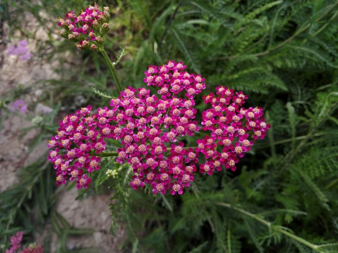

| herbal remedy | sign in register |
|
Yarrow
UseYarrow is native to Europe and Asia, and has been naturalized in North America. Its use in food and medicine is ancient, dating back to the Trojan War, around 1200 BC. In legend, Achilles used it on the Centaur's advice, hence the name. In classical times, yarrow was referred to as "herba militaris" because it stopped bleeding wounds received in war. Yarrow leaves have been used for tea, and young leaves and flowers have been used in salads. Infusions of yarrow have served as cosmetic cleansers and medicines. Sneezewort leaves (A. ptarmica) have been used in sneezing powder, while those of A. millefolium have been used for snuff. Yarrow has been used therapeutically as a "strengthening bitter tonic" and astringent. Chewing fresh leaves has been suggested to relieve toothaches. Yarrow oil has been used in shampoos for a topical "healing" effect. DosingA typical dose of yarrow herb is 4.5 g/day for inflammatory conditions. However, there are no modern clinical studies to validate this dose. ContraindicationsYarrow is contraindicated in individuals with an existing hypersensitivity to any member of the Asteraceae family. Use in epileptic patients is contraindicated. Pregnancy/LactationDocumented adverse effects. Emmenagogue (to stimulate menstrual flow) and abortive. Avoid use of yarrow's volatile oil during pregnancy. Side EffectsContact dermatitis is the most commonly reported side effect. |